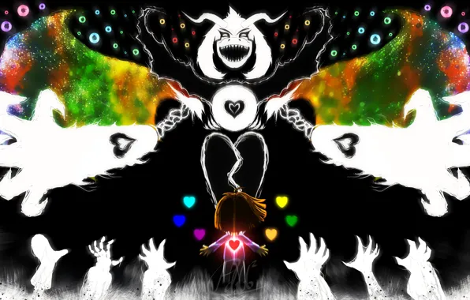
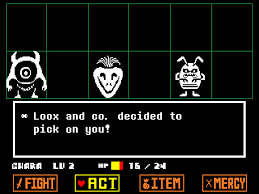
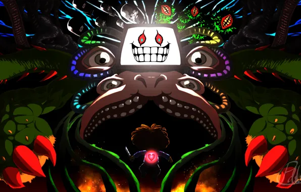

Undertale é um RPG independente onde você não precisa matar ninguém. Uma aventura única cheia de escolhas, humor e emoção.
5 motivos para jogar:
- História envolvente e emocionante
- Personagens memoráveis
- Sistema de combate criativo
- Trilha sonora marcante
- Finalizações diferentes por suas escolhas


